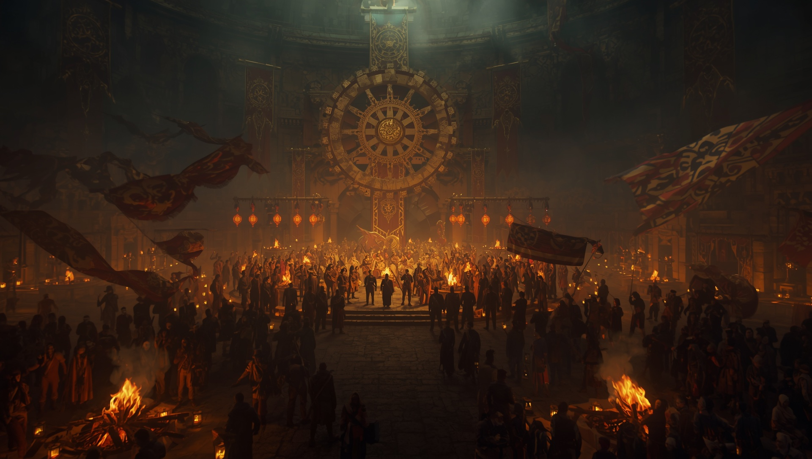
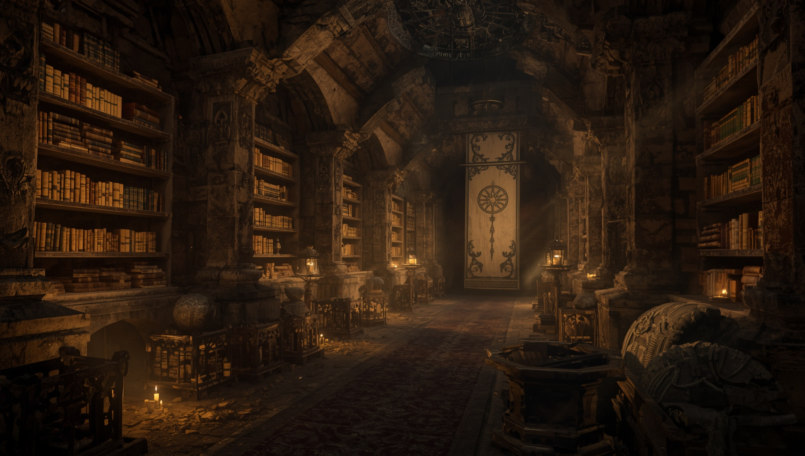

The Call

Though the path is unforgiving,
We endure it side by side.
And we will rise together.
A refuge for the weary.
A shrine to perseverance.
A reminder to carry forward.
What Is The Grind?
The Grind is not endless labor.
It is not hustle.
It is not surrendering your life to exhaustion.
The Grind is the burden of living.
The quiet strength required to remain kind in a difficult world.
To carry forward without losing yourself.
Why The Shrine Exists
The world wears people down.
So we build one another up.
The Shrine exists as a place of return.
A place to rest.
To reflect.
To endure together.
The Wheel
The wheel turns endlessly forward.
A symbol of perseverance, continuity, and shared burden.
Even when the road is harsh,
the wheel still turns.
The Principles
- Kindness is a choice.
- Rest is not weakness.
- We carry one another forward.
- Even small steps matter.
- The wheel keeps turning.
If You Are Weary
Rest here awhile.
Walk beside us.
Carry forward together.
Music

The music of the Shrine is made to be carried: through work, rest, streams, videos, long roads, and quiet hours.
You are welcome to use these songs in your own creations. When you want to support the Shrine, listen through the official platform links below.
Featured Release
Shrine of the Grind - Vol. 1: The Path
Releases June 19 at midnight Central Time.
Nine songs for the long road forward. A journey through effort, burden, repetition, focus, exhaustion, and breakthrough.
Track Listing
- Miles to Burn
The road opens, and the journey begins.
- Stone by Stone
Progress built one piece at a time.
- Weight of the Work
The burden carried because it matters.
- Just Grind
The simple command to keep moving.
- G.R.I.N.D.
A chant for repetition, discipline, and momentum.
- Drift
The mind loosens while the hands continue.
- Flowstate
Where motion becomes peace.
- Lost in the Grind
The deep place where effort becomes identity.
- Burn Through
The final push beyond exhaustion.
Future Releases
My Choice and One Grind will appear on a later Shrine release.
The Jaruud anthems will receive their own separate album release.
Use the Music
These songs are meant to travel. Use them in streams, videos, edits, rituals, and grind sessions.
When possible, play them from the official links so the Shrine can keep growing.
Doctrine

The Doctrine of the Grind is not a demand for endless labor.
It is a way of carrying hardship without surrendering kindness, rest, or one another.
The Grind
The Grind is not a finish line. It is the ground beneath us:
the daily act of continuing, building, healing, and returning.
It is not hustle. It is presence under weight.
The grind is not a goal. It is the ground beneath us. Step steady. Build true.
Today’s task is not the final task. Today’s stone is not the last stone. But still we lay it.
The grind does not end. It only deepens.
We’re not waiting for something. We’re making something.
The Wheel
The Wheel is motion, rhythm, burden, and return.
It reminds us that the work continues, but no single hand must carry the whole weight.
Every gift moves the wheel forward.
The hands change. The work remains.
Stone laid, weight shared, flame fed.
The world wears us down. So we build one another up. And the wheel keeps turning.
Burden
Burden is not proof of failure. It is part of being alive.
What matters is how we carry it, and whether we let it harden us against each other.
Lay your burden down, and pick up only what you can carry.
When the grind feels heavy, step back but do not step away.
In loss, lay stone. In grief, lift weight.
No one carries alone within the Shrine.
Rest
Rest is not betrayal of the work. It is how the hands return.
The Grind does not ask us to destroy ourselves in its name.
Even endurance needs tending.
Even the stone rests before it settles.
The grind is eternal. You are not. Rest when you must. Return when you can.
Rest is not failure. It is preparation for the next load.
Pause is part of progress.
Kindness
Hardship may explain pain, but it does not have to decide who we become.
Kindness is not softness. It is strength refusing to become cruel.
The world asks much of us. Still we answer with kindness. Still we carry forward.
To suffer is not to be given permission to wound.
Kindness is a choice made under pressure.
We do not return hate for hurt. We choose what we become.
Community
The Shrine is built by many hands: not because every hand is strong at once,
but because each returns when it can. What one cannot carry, many may lift.
The world wears us down. So we build one another up.
The Shrine grows by many hands, not by one.
What we give sustains what shelters us.
All Hail the Grind, and the hands that serve it.
Silence
Not all work is loud. Not all healing announces itself.
Some of the truest labor happens quietly, between breaths.
Quiet is when the real work happens.
In silence, I grind. In the grind, I heal.
Silence feeds the flame. Build through it.
Sacred is the stillness between the steps.
Carrying Forward
We do not carry forward because the road is easy.
We carry forward because meaning is made in the returning,
the rebuilding, and the refusal to become cruel.
A single brick today is better than none tomorrow.
What you do now becomes what lasts later.
Go with purpose. Let your work speak for you.
The path continues. Keep grinding.
Jaruud

Red banners. White stone. Crowned horns.
Jaruud is the realm around the Shrine: a people shaped by burden, discipline, loyalty, and shared endurance.
It is not conquest that defines them, but the refusal to break when the world grows heavy.
The Kingdom
Jaruud stands where hardship gathers. Its where people build, defend, carry, and return.
They are not untouched by suffering. They are made recognizable by what they choose to become through it.
The Crowned Goat
The crowned goat is the mark of Jaruud: stubborn endurance, mountain-born pride, and the will to climb when the path offers no mercy.
The crown does not mean comfort. It means responsibility.
The Hearth
Jaruud is not held together by fear or conquest, but by shared burden.
Within its halls, the weary find firelight, rest, and the reminder that no burden was meant to be carried alone.
No one leaves the fire unheard.
The People
Jaruud is built by those who return.
No burden is made noble by carrying it alone.
The crown is not above the people. It is carried by them.
Through the Grind, Jaruud endures.
Anthems of Jaruud
The banners of Jaruud are carried not only by hand, but by voice.
These songs echo through the halls, the forges, and the fires of the kingdom.
We Are All Jaruud
Gold in the Gears
Jaruud Battlehymn
Enter the Music Hall
Archives

The Archives hold what the Shrine remembers:
fragments of doctrine, songs, rituals, old banners, and words carried forward from earlier paths.
Codex Fragments
Short teachings, unfinished truths, and lines worth preserving even before they find their final form.
Today’s burdens become tomorrow’s stories.
Music Records
Anthems, chants, grind songs, and the sounds that gave the Shrine its voice.
All Hail the Grind, and the hands that serve it.
Jaruud Records
Notes from the realm: banners, symbols, oaths, stories, and the culture growing around the Shrine.
Jaruud is built by those who return.
Old Stones
Not every line remains doctrine. Some become memory. Some become foundation. Some simply mark where the path once turned.
The hands change. The work remains.